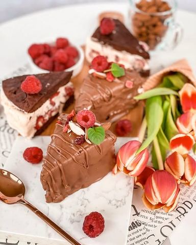

Moja beleška
SačuvanoSastojci
- Biskvit
- Sladoled fil
- Još
Priprema
Mikserom umutite jaja pa im dodate kakao sa prhosvatom soli. U manjoj šerpici puter otopite na šporetu, pa u vreo dodate šećere, mutite mikserom 1 minut, pa povežete smesom sa jajima. Na kraju dodate brašno sa praškom za pecivo i sjedinite. Dobićete gustu smesu koju delite na dva dela. Tačnije dobijate nekih 480 gr čokoladne smese i delite je na po 240 gr koje izlijete i uravnate u kalupe prečnika 20 cm. Ja sam stavila i pek papir kako se ne bi zalepilo. Peku se tačno 10 minuta i onda ih ostavite na hladjenju. Sladoled pre korišćenja nekih 15 ak minuta ostavite u frižideru, kako bi lepo omeksao. Pomešajte ga lagano kašikom sa grčkim jogurtom i tome dodajte oprane i posušene maline posute kašikom kristal šećera. Kalup oblozite providnom folijom pa redjajte biskvit, sladoled fil, biskvit, blago potisnute rukom i ostavite preko noći u zamrzivaču. Ujutru isecite na željene parčiće pa svako prelijte sa svih strana otopljenom i prohladjenom čokoladom. Pospite sa malo seckanog badema i dodajte po neku svežu malinu. Neverovatno dobar spoj ukusa, oduševio je sve ukućane! Kako bi torticu lakše sekli i lepše jeli pre posluživanja je ostavite nekih 10 ak minuta na sobnoj temperaturi. Jedva čekam da isprobate 🥰
Originalni opis sa Instagrama
Sladoled sendvič tortica 🍦🍰 Danas sam vam pripremila jednu fenomenalnu sladoled sendvič tortu 💓 Čokoladni sendvič biskvit, sa puno kvalitetnog kakaa, vanila sladoled udružen sa neodoljivim kremastim grčkim kokos jogurtom i svežim malinama, pa sve to preliveno novom mlečnom karamel čokoladom sa dodatkom badema 😋😋😋 Da li sam vam već rekla koooliko je fenomenalna..? 🍦🍰 Sve sastojke za pripremu sam kupila u @lidlsrbija, a recept kao i uvek delim sa vama: Biskvit: •2 jaja •60 gr kakaa •mrvica soli •1/2 kašičice praška za pecivo •125 gr putera •125 gr kristal šećera •90 gr brašna Sladoled fil: •600 gr sladoleda od vanile •150 ml kremastog grčkog jogurta sa kokosom •200 gr svežih malina •kašika kristal šećera Još: •400 gr mlečne karamel badem čokolade •2 kašike ulja •nekoliko badema za dekoraciju Priprema: Mikserom umutite jaja pa im dodate kakao sa prhosvatom soli. U manjoj šerpici puter otopite na šporetu, pa u vreo dodate šećere, mutite mikserom 1 minut, pa povežete smesom sa jajima. Na kraju dodate brašno sa praškom za pecivo i sjedinite. Dobićete gustu smesu koju delite na dva dela. Tačnije dobijate nekih 480 gr čokoladne smese i delite je na po 240 gr koje izlijete i uravnate u kalupe prečnika 20 cm. Ja sam stavila i pek papir kako se ne bi zalepilo. Peku se tačno 10 minuta i onda ih ostavite na hladjenju. Sladoled pre korišćenja nekih 15 ak minuta ostavite u frižideru, kako bi lepo omeksao. Pomešajte ga lagano kašikom sa grčkim jogurtom i tome dodajte oprane i posušene maline posute kašikom kristal šećera. Kalup oblozite providnom folijom pa redjajte biskvit, sladoled fil, biskvit, blago potisnute rukom i ostavite preko noći u zamrzivaču. Ujutru isecite na željene parčiće pa svako prelijte sa svih strana otopljenom i prohladjenom čokoladom. Pospite sa malo seckanog badema i dodajte po neku svežu malinu. Neverovatno dobar spoj ukusa, oduševio je sve ukućane! Kako bi torticu lakše sekli i lepše jeli pre posluživanja je ostavite nekih 10 ak minuta na sobnoj temperaturi. Jedva čekam da isprobate 🥰 • • • #lidlsrbija #sladoledtorta #vanila #kokos #maline #lale #idejezadezert #dezert #slatkisi #homemadeicecreamcake #icecreamsandwich